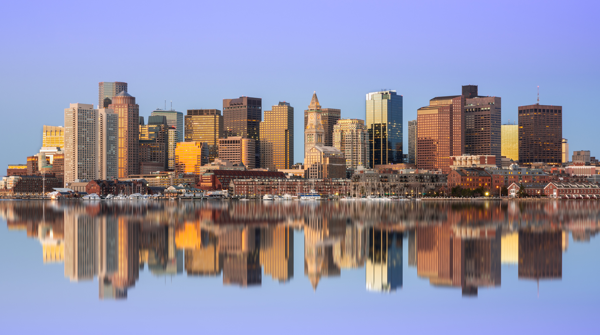

Our main goal of the program is to create a website which showcases each of our individual interests related to the city of Boston. Throughout the process, we hope to aquire new coding skills and expand existing knowledge in the field of web development and design. Here are some subgoals:
The six-week RISE: Web Development Program brings together high schoolers from the Boston area to further develop their interest in and knowledge of Web Development. The program takes place in the spring semester 2021 from March 9 to April 13 and is entirely virtual. After importing all sorts of things into a thing called "CS50.ide", a cloud-based Integrated Development Environment, we were able to start coding right away! The instructors set up challenges for us to get familiar with html. We learned about all the different aspects of a webpage like HTML, CSS and JAVASCRIPT. The class was a lot of fun and we all learned a lot!